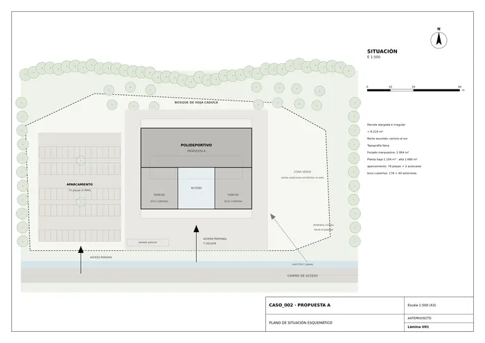
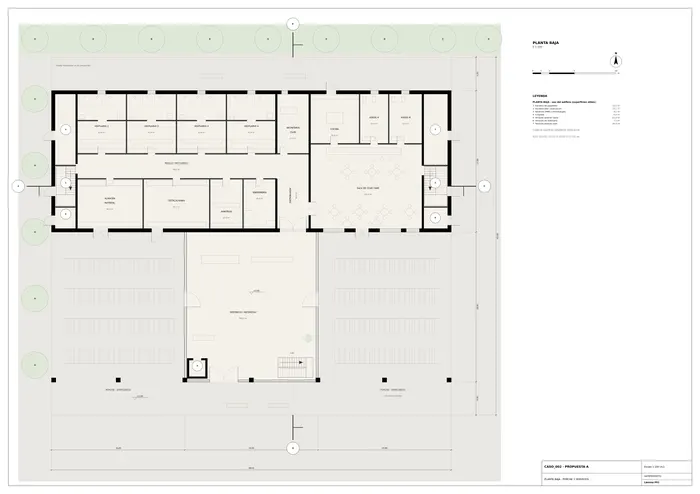
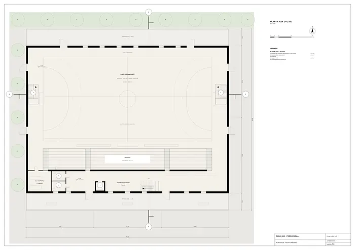
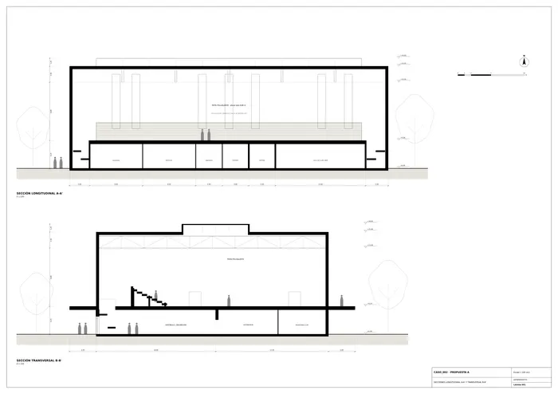
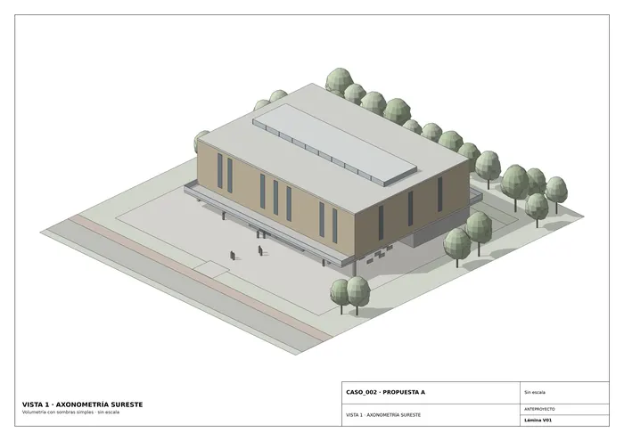
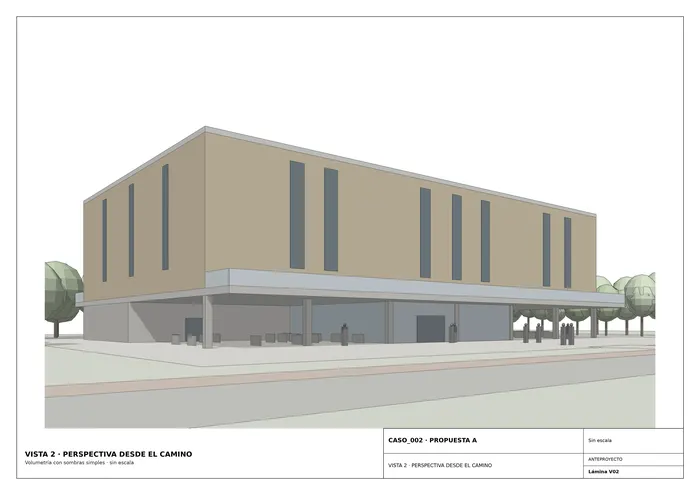

Caso 002 · OV-architekti (Štěpán Valouch; Jiří Opočenský) · 2021 · equipamiento deportivo
El boceto muestra un volumen alto y rectangular, con huecos verticales y luz cenital, apoyado sobre una losa horizontal que vuela a ambos lados y bajo la cual pasan la bicicleta y las personas. La propuesta convierte esa imagen en el partido del edificio: una gran sala deportiva elevada sobre una marquesina-forjado (+4,20 m). El forjado (48 x 43 m) vuela 4 m a norte y a sur y crea un porche público a cota de calle, que funciona a la vez de acceso, aparcabicis cubierto y plaza de encuentro junto al itinerario ciclista. Sobre el forjado, la sala de 48 x 35 m, revestida de madera, con huecos verticales y un lucernario longitudinal (la "luz radial" del boceto). Se busca un edificio duradero y con presencia, no una nave estándar.
| Espacio | m² |
|---|---|
| Vestíbulo/recepción (incl. escalera y ascensor) | 284 |
| Distribuidor y pasillo de vestuarios | 103 |
| Vestuarios deportistas (4 x 41,6) | 166 |
| Árbitros + enfermería | 46 |
| Almacén material + instalaciones | 93 |
| Secretaría club | 28 |
| Sala de club / bar + cocina + aseos | 194 |
| Escaleras, ascensor y almacenes exteriores | 89 |
| Planta baja (útil) | ~1.022 |
| Pista polivalente 40 x 20 (zona de juego y seguridad: 1.122) | 800 |
| Graderío (500 asientos) | 205 |
| Vestíbulo de gradas | 186 |
| Sala de prensa y aseos | 43 |
| Planta alta (útil, sin pista ampliada) | ~1.234 |
| Superficie construida cerrada (PB 1.104 + PA 1.680) | 2.784 |
| Porche cubierto abierto (bajo el forjado) | 960 |
| Terrazas abiertas | 384 |
Frente al programa: pista, vestuarios, graderío, sala de club, apoyo, aparcamiento (70 plazas) e infraestructura ciclista quedan resueltos; la superficie cerrada (2.784 m²) está dentro del rango orientativo de 1.600-3.000 m². Huella ocupada por el forjado: 2.064 m² sobre una parcela asumida de ~8.200 m². Presupuesto: con una construcción simple y repetitiva se estima 1,8-2,0 M EUR, en el límite alto del rango; el porche abierto y las terrazas son los elementos más prescindibles si hay que ajustar.
Clima templado-frío (inviernos con nieve): envolvente muy aislada y compacta (forma sencilla, sin puentes térmicos en el voladizo, que se resuelve con rotura de puente térmico); calefacción radiante por suelo con bomba de calor; ventilación mecánica con recuperación de calor en la sala y ventilación natural cruzada en verano mediante ranuras bajas y lucernario practicable (efecto chimenea). Los huecos verticales y el lucernario dan luz natural difusa; el porche protege del sol y de la lluvia al acceso sur. Cubierta fotovoltaica sobre la parte plana. Árboles de hoja caduca del entorno como protección solar y de viento. Nieve: cubierta con carga prevista de 1,0 kN/m² y evacuación interior.

U01 · Plano de situación esquemático
P01 · Planta baja · porche y servicios
P02 · Planta alta · pista y graderío
S01 · Secciones longitudinal A-A' y transversal B-B'
V01 · Vista 1 · axonometría sureste
V02 · Vista 2 · perspectiva desde el caminoMemoria de la propuesta tal como la entregó el sistema. Se han omitido las notas internas del proceso (revisiones, control de reconocimiento y referencias a archivos de trabajo).